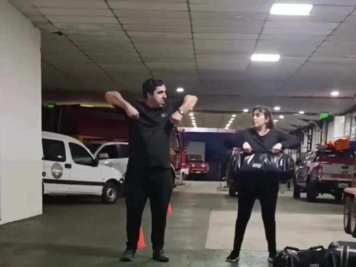
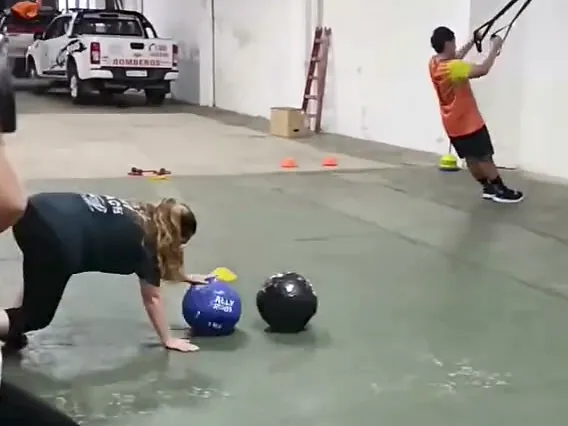
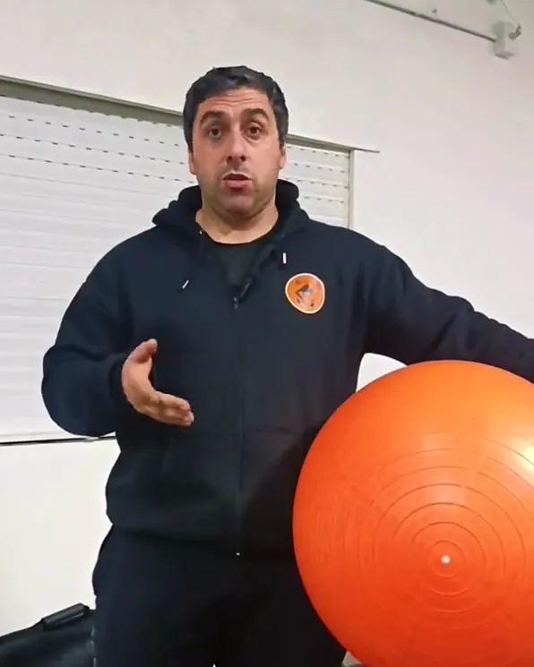
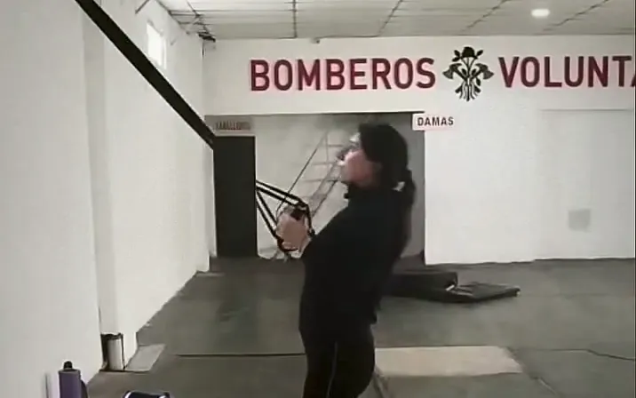

Entrenamiento funcional en 25 de Mayo. Que quieras volver.
Grupos de máximo 7 personas, con cada ejercicio adaptado a tu nivel. En el Cuartel de Bomberos: calle 21 Nº 739, entre 8 y 9.
Te abre WhatsApp. Pagás recién desde la segunda clase.
- Cuota
- Vermás abajo
- Tarde
- 18 y 19 hlunes y jueves
- Mañana
- 7 hmartes y viernes

El enfoque
Lo más fácil para un entrenadorAgotarte hasta dejarte sin aire.
Lo difícil, y lo que de verdad importaQue quieras volver cada semana, sin lastimarte entrenando.
Sabe lo que hace.Es licenciado en Alto Rendimiento Deportivo y preparador físico.
Te adapta.Cada ejercicio a tu nivel, tengas experiencia o no, con una progresión gradual.
Te cuida.No entrenás solo: te mira, te corrige la técnica y se fija que estés bien. La salud va primero.
Porque el factor más importante para mejorar no es una sesión intensa, sino la continuidad.
Nicolás ValleProfe de Espacio Funcional 25
Cómo es la clase
Una hora de fuerza, resistencia y acondicionamiento físico, en estaciones de trabajo que alternan patrones de movimiento.
Una vuelta del circuito, por ejemplo
- SentadillasLevantar. Con mancuernas.
- EmpujesEmpujar. Press con mancuernas.
- TraccionesTirar. Remo con TRX.
- CoreEstabilizar. Con la pelota medicinal.
- AeróbicoMoverte. Saltos, cubierta y maza.
Y otra vuelta
Alternar patrones de movimiento permite mantener un buen nivel de esfuerzo sin generar fatiga excesiva, y que puedas sostener el entrenamiento durante toda la clase sin terminar destruido.

Es a propósito: así el profe te ve a vos. Te corrige la técnica, adapta cada ejercicio a tu nivel y se fija que estés bien.
Turnos y cuota
Elegís un turno y venís 2 veces por semana. Los días que no venís, podés combinar el entrenamiento con algo más suave, como caminar o andar en bicicleta.
Turnos
- Lunes y jueves18 a 19 h
- Lunes y jueves19 a 20 h
- Martes y viernes7 a 8 h
Máximo 7 personas por turno.
Cuota mensual
$35.000por mes
Valores de octubre de 2026.
- 2 clases por semana
- Planificación del entrenamiento
- Seguimiento técnico
- Adaptación de los ejercicios según tu nivel
La clase de prueba es gratis.Empezás a pagar desde la segunda clase.
Plan complemento
Un plan para hacer por tu cuenta
Personalizado: running, fuerza o lo que necesites.
- Si ya entrenás en el espacio
- $10.000extra por mes
- Solo el plan, sin venir a las clases
- $25.000por mes

El profe
Nicolás Guido Valle
Profesor en Educación Física y licenciado en Alto Rendimiento Deportivo
Da clases de Educación Física en escuelas de la zona desde 2017 y, desde 2022, es preparador físico de las inferiores de fútbol de Nuevo Globito. En el espacio planifica los entrenamientos, adapta cada ejercicio a tu nivel y corrige la técnica de cada uno.
Experiencia
- 2025 – hoy
- Equipo de conducción del CEF Nº 198Secretario
- 2022 – hoy
- Preparador físico de fútbolInferiores (8.ª, 7.ª, 6.ª y 5.ª) del Club Atlético Nuevo Globito
- 2017 – hoy
- Profesor de Educación FísicaEn escuelas de la zona, en todos los niveles de la educación obligatoria, y en el CEF
- 2021 – 2022
- Sala de fuerza y clases de funcionalProyecto propio, junto a otros colegas
- 2020 – 2022
- Preparador físico de rugbyCategorías M12, M14 y M16 de Tacuara Rugby Club
Formación
- 2025
- Tercer dan de karate Goju-RyuTraditional Okinawan Goju-Ryu Karate-Do Federation
- 2023
- Licenciado en Alto Rendimiento DeportivoUniversidad de San Pablo-Tucumán
- 2023
- Seminario de ejercicio físico para personas con obesidadInterdisciplinario, de Ethos
- 2022
- RCP y primeros auxiliosCurso de RCP, primeros auxilios y prevención de accidentes
- 2020
- Diplomado «Preparador físico deportivo»Asociación Natatio Argentina
- 2017
- Profesor en Educación FísicaInstituto Santa Rosa
Cursos y capacitaciones
- Maestros del progreso, Corporal Kinesis (2024)
- Taller de pretemporada de fútbol, Torque (2024)
- Destrezas del movimiento, Emiliano Gonzalez (2023)
- Preparación física de fútbol infantojuvenil, Yo Sé (2023)
- HIIT: evaluación y programación del entrenamiento en deportes de equipo, Pablo Añon (2022)
- Bases del entrenamiento de velocidad para deportes de equipo, Pablo Añon (2022)
- Entrenamiento intermitente, Cantidad de Calidad (2020)
- Sistemas de entrenamiento, Cantidad de Calidad (2020)
- Preparación física para deportes de contacto, IFE (2020)
- Conmoción cerebral, Unión Argentina de Rugby (2019)
- Educación alimentaria I, Universidad Atlántida Argentina (2019)
No hace falta que estés en forma para arrancar.
Vení a una clase de prueba para conocer cómo trabajamos. Es gratis: la reservás por WhatsApp y empezás a pagar desde la segunda clase.
¿Preferís llamar? 2345-402547

Dónde estamos
Cuartel de BomberosCalle 21 Nº 739, entre 8 y 9Veinticinco de Mayo (CP 6660), Buenos Aires